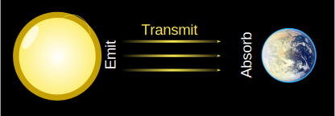
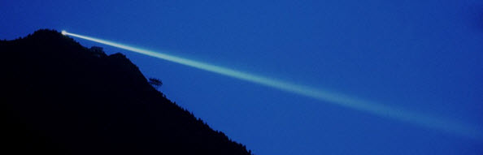
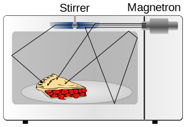
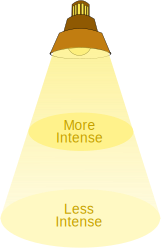
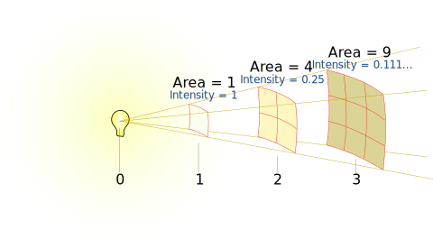
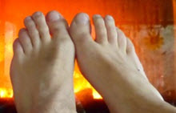
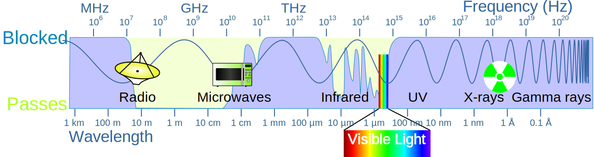
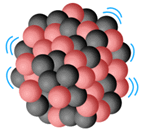
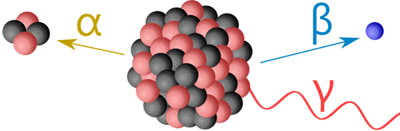
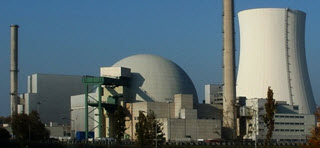

Radiation

Radiation is energy moving through space or matter.
Radiation can be:
- electromagnetic waves like infrared, light, X-rays, etc
- mechanical waves like sound waves and seismic waves, or
- particles like alpha particles and beta particles (more on those later)
Words
Radiation is emitted from a source, transmitted to a destination, where it can be absorbed.

Here the Sun is the source
and the Earth is the destination
Radiation can also be scattered when hitting particles along the way, as well as reflected, refracted and diffracted (read up on those topics to learn more).

Here we see light (a type of radiation) being scattered by the atmosphere.
Example: Microwave Oven

the magnetron emits microwaves
which get reflected off a stirrer and the sides
until absorbed by food.
Intensity
We can measure radiation intensity at any location as power per area: usually Watts per square meter (W/m2).
As it spreads out on its journey, the intensity gets less.

Inverse Square
In fact the intensity changes as the Inverse Square of the distance.
 |
Inverse Square: when one value decreases as the square of the other value. |
Example: Light and distance
The further away we are from a light, the less bright it is.

The brightness decreases as the square of the distance.
Because:
- the energy twice as far away is spread over 4 times the area
- the energy 3 times as far away is spread over 9 times the area
- etc
Absorbing!
As radiation gets absorbed it loses intensity.
Materials vary in how much they absorb different types of radiation.

When energy is absorbed the material may:
- heat up
- produce electric currents (such as in aerials/antennas)
- help with chemical reactions (like photosynthesis)
- ionize atoms
Ionizing Radiation

High energy radiation is ionizing, meaning it can knock electrons out of atoms.
Losing an electron makes the atom charged and more likely to form new chemical reactions which can be harmful to our cells.
The cells can die or change so they grow out of control and form cancer.
But medicine uses ionizing radiation to help us, such as with X-rays, or as a way to kill cancer cells.
And we live with a small amount of ionizing radiation from the world around us every day.
Ionizing radiation can come from
- Electromagnetic Radiation
- Radioactive atoms
Electromagnetic Radiation
Gamma rays and X-rays and some ultraviolet waves have enough energy to be ionizing.
Example: From The Sun
A lot of the the radiation from the Sun gets reflected or absorbed by the atmosphere.
Only
- radio waves
- some infrared
- visible light, and
- some ultraviolet
get all the way through:

So ultraviolet is the only ionizing radiation that reaches us at ground level.
Radioactive Materials

Some atoms have too much energy.
They will randomly decay to a more stable state by sending out radiation.
We say those atoms are radioactive (they can actively emit radiation!)
The radiation emitted has high energy, is ionizing and can be of 3 types (α, β and γ):

Alpha Particles (α)
Alpha particles have two protons and two neutrons in the form of an atomic nucleus.
They are highly charged, fairly heavy and slow. So they are easily stopped by a sheet of paper or even a few centimeters of air.
Beta Particles (β)
Beta particles are high energy electrons.
They have 100 times more penetrating power than alpha particles, but can be stopped by a few millimeters of aluminium or a centimeter or so of water.
Gamma rays (γ)
Gamma rays are high frequency electromagnetic waves.
They need thick lead or lots of water to stop them.
Most will go straight through our bodies. But when they hit atoms in our body they can harm us.

Neutron Radiation
There is also neutron radiation, which occurs in nuclear reactions such as thermonuclear explosions or inside nuclear reactors.
Sources
Typical sources of radiation are
- the Sun (many types of radiation, some of which are ionizing)
- X-ray machines
- radioactive materials like uranium and thorium (which are in tiny amounts in the ground, in bricks, stones, soil and concrete, and even in bananas!)
- microwave ovens (non-ionizing)
- and more
Irradiation and Contamination
Irradiation is when we are exposed to radiation (usually meaning ionizing radiation)
Contamination is when we breath in or swallow radioactive material
Irradiation may happen for only a short time, but contamination is inside our body and keeps us irradiated for a long time.
Radiation Doses
We get small amounts of radiation all the time from the world around us. And sometimes a little extra when we have an X-ray.
The health effect of ionizing radiation is measured in Sieverts (Sv).
1 Sv is a very large and dangerous dose, so we tend to talk about:
- microSieverts (µSv), which are one-millionth of a Sv, or
- milliSieverts (mSv) which are one thousand of a Sv
Some typical values:
| Source | Typical Dose | As Sieverts |
|---|---|---|
| Dental X-Ray | 10 µSv | 0.000 01 |
| Chest X-ray | 20 µSv | 0.000 02 |
| Mammogram | 400 µSv | 0.000 4 |
| Typical yearly background | 2 mSv | 0.002 |
| Head CT Scan | 3 mSv | 0.003 |
| Full CT Scan | 30 mSv | 0.03 |
| Severe radiation poisoning | 2 Sv | 2 |
| Fatal acute dose | 5 Sv | 5 |

X-ray of a hand on a computer mouse
Stay safe!